[F217]
[F217]
Ref: F217
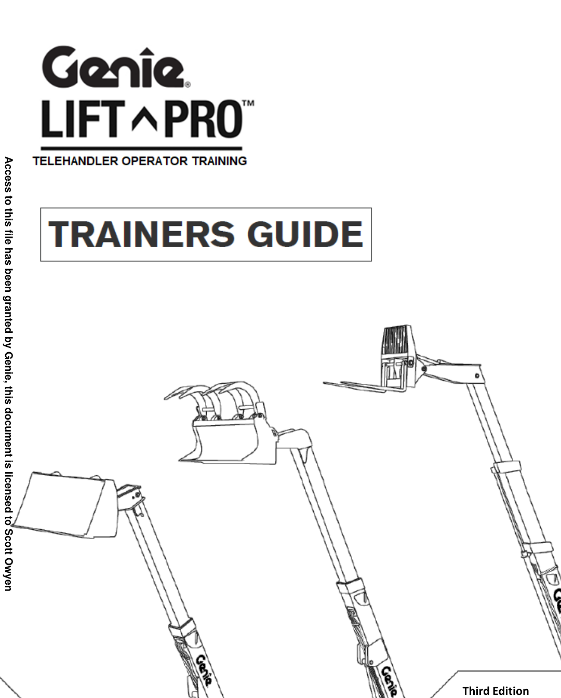
If you have any questions regarding the presentation of this course, please call Genie at 1-800-536-1800 or email us at AWP.Training@terex.com. [F002]
Class 1–5 Forklifts: Forklift operator training requirements are addressed in 29 CFR 1910.178(l). Certification records include the operator name, dates of training/evaluation, and the identity of the instructor/evaluator.
No Class 1–5 addition on this point.
Your role in properly setting the tone for the class and positioning the importance of safe use is critical. As the trainer, it is your responsibility to provide the necessary information so that each operator fully understands their responsibilities associated with the safe operation of telehandlers. [F003]
Class 1–5 Forklifts: Employer responsibilities include training programs, a safe working environment, right equipment for the job, and mechanically sound equipment. Employee responsibilities include helping eliminate personal injury, product/property damage, and providing a safe working environment for others on site.
In order to improve your chances of success, you should have an understanding of your operator's application and working environment. [F004]
No Class 1–5 addition on this point.
Remember, your ultimate goal is to ensure that operators fully understand the procedures and practices of safe telehandler operation, as well as all workplace factors which may affect their safety and the safety of those around them. [F005]
No Class 1–5 addition on this point.
No Class 1–5 addition on this point.
The American National Standards Institute (ANSI) defines a qualified person as: [F007]
No Class 1–5 addition on this point.
Not only must a trainer meet the definition of a qualified trainer, they must also comply with the responsibilities regarding training as outlined in ANSI/ITSDF B56.6, OSHA Rule 1910.178 (I) and CSA B335 standards, including record keeping and determination that operators have successfully demonstrated that they are qualified to operate a telehandler. [F008]
No Class 1–5 addition on this point.
If you have any questions regarding the presentation of this course, please call Genie at 1-800-536-1800 or email us at AWP.Training@terex.com.
Class 1–5 Forklifts: Forklift operator training requirements are addressed in 29 CFR 1910.178(l). Certification records include the operator name, dates of training/evaluation, and the identity of the instructor/evaluator.
Your role in properly setting the tone for the class and positioning the importance of safe use is critical. As the trainer, it is your responsibility to provide the necessary information so that each operator fully understands their responsibilities associated with the safe operation of telehandlers. [F002]
Class 1–5 Forklifts: Employer responsibilities include training programs, a safe working environment, right equipment for the job, and mechanically sound equipment. Employee responsibilities include helping eliminate personal injury, product/property damage, and providing a safe working environment for fellow employees.
In order to improve your chances of success, you should have an understanding of your operator's application and working environment.
Remember, your ultimate goal is to ensure that operators fully understand the procedures and practices of safe telehandler operation, as well as all workplace factors which may affect their safety and the safety of those around them.
Class 1–5 Forklifts: OSHA requires proper training for all lift truck operators, and only trained and authorized personnel can operate specific equipment.
The American National Standards Institute (ANSI) defines a qualified person as:
Not only must a trainer meet the definition of a qualified trainer, they must also comply with the responsibilities regarding training as outlined in ANSI/ITSDF B56.6, OSHA Rule 1910.178 (I) and CSA B335 standards, including record keeping and determination that operators have successfully demonstrated that they are qualified to operate a telehandler.
Class 1–5 Forklifts: Forklift operators are responsible for safe operation and for preventing personal injury, product damage, and property damage. Operators are expected to help maintain a safe working environment for others on the site.
Class 1–5 Forklifts: Forklift training must be performance-based and tailored to the workplace and the specific Class 1–5 truck types the operator will use. Employers must train and evaluate operators and keep certification records showing the operator name, training/evaluation dates, and the trainer/evaluator identity.
As mentioned previously, each operator must achieve 100% on the written examination and show proficiency in the hands-on demonstration of safe machine operation. Anything less than 100% would imply that it's okay to compromise jobsite safety, which is never acceptable. Each operator must actively participate in the training workshop, including classroom activities and hands-on operation. [F010]
This principle applies to forklift training as well.
Additional training and/or coaching may be necessary to pass the course. [F011]
This principle applies to forklift training as well.
This principle applies to forklift training as well.
It cannot be overstated that the safe operation of a telehandler on any worksite can save the life of the operator as well as those working around them. Therefore, the responsibilities are great for both the trainer and operator to ensure that the safe operation of a telehandler is always of paramount importance. [F013]
This principle applies to forklift training as well.
Class 1–5 Forklifts: Before hands-on driving, confirm the operator’s truck type (Class I–V), review the operator’s manual and data plate/capacity information, and set up a practice route that matches real job tasks (stacking/unstacking, intersections, pedestrians, docks/plates or ramps if applicable).
When applying these suggestions, it is important to be flexible and to adjust your training to fit the special needs of your class as the situation demands. To be an effective trainer, you will need to be fully prepared prior to conducting the training class. [F015]
This principle applies to forklift training as well.
This principle applies to forklift training as well.
This principle applies to forklift training as well.
This principle applies to forklift training as well.
This principle applies to forklift training as well.
This principle applies to forklift training as well.
This principle applies to forklift training as well.
This principle applies to forklift training as well.
Developing a training agenda (or organized plan) that will cover the content that you will provide during your training will go a long way to improving the success of your telehandler safety training class. Let's review some helpful hints on how to develop your agenda: [F023]
This principle applies to forklift training as well.
This principle applies to forklift training as well.
This principle applies to forklift training as well.
This principle applies to forklift training as well.
Class 1–5 Forklifts: Forklift operator training requirements are addressed in OSHA 1910.178(l). For forklifts (Classes 1–5), the ANSI/ITSDF standard is typically B56.1.
Class 1–5 Forklifts: Include required pre-operation inspection steps and ensure operators can perform them consistently before operating.
Class 1–5 Forklifts: Evaluate each operator’s competence operating the forklift under actual workplace conditions on the specific truck type and tasks.
Class 1–5 Forklifts: Keep forklift training/evaluation records — operator name, date of training, date of evaluation, and identity of trainer/evaluator (plus truck type/class as applicable).
This principle applies to forklift training as well.
This principle applies to forklift training as well.
Another important minimum consideration is that operators need to be made aware of the following: [F030]
This principle applies to forklift training as well.
This principle applies to forklift training as well.
Operators must be informed that, in addition to the information found in the operator's manual and AEM Safety Manual, as well as machine decals and employers' instructions, they must use their own common sense as it relates to safety. [F032]
This principle applies to forklift training as well.
This principle applies to forklift training as well.
This principle applies to forklift training as well.
This principle applies to forklift training as well.
We suggest using several different techniques to capture the operator's attention and to create a learning environment that facilitates participation. These include: [F036]
This principle applies to forklift training as well.
This principle applies to forklift training as well.
The Participant's Guide flows parallel to the Trainer's Guide, although a series of fill-in-the- blank statements are provided, which the operator is required to complete (answers are provided for the trainer in the Trainer's Guide). [F038]
No Class 1–5 addition on this point.
The video also repeats and reinforces key safety concepts and information. [F039]
No Class 1–5 addition on this point.
In addition, it should be made clear that it is the operator's responsibility to identify and avoid all hazards. If they are unclear about any possibly unsafe situation, they should stop work and seek the assistance of their employer. [F040]
This principle applies to forklift training as well.
Sample copies of operator's manuals are included in the training kit. The trainer can use the samples to reproduce an operator's manual for each participant. Select a manual that is most appropriate for the type of telehandler used in the training. [F041]
No Class 1–5 addition on this point.
Class 1–5 Forklifts: Build the driving route/evaluation to include applicable site conditions (ramps/grades, dock plates, trailers, narrow aisles) consistent with the operator’s job tasks.
This principle applies to forklift training as well.
This principle applies to forklift training as well.
This principle applies to forklift training as well.
Typical materials and resources that you will need are included in this telehandler Training Kit. These include: [F046]
No Class 1–5 addition on this point.
No Class 1–5 addition on this point.
No Class 1–5 addition on this point.
No Class 1–5 addition on this point.
No Class 1–5 addition on this point.
Other required training materials and resources include the following: [F051]
No Class 1–5 addition on this point.
This principle applies to forklift training as well.
This principle applies to forklift training as well.
This principle applies to forklift training as well.
Of course, you will also need to determine how to improve your own abilities to communicate as you receive feedback from operators, colleagues, and fellow trainers. [F055]
This principle applies to forklift training as well.
Effectively integrating the following into a training class will help make the class successful: [F056]
This principle applies to forklift training as well.
This principle applies to forklift training as well.
This principle applies to forklift training as well.
This principle applies to forklift training as well.
This principle applies to forklift training as well.
This principle applies to forklift training as well.
This principle applies to forklift training as well.
This principle applies to forklift training as well.
This principle applies to forklift training as well.
This principle applies to forklift training as well.
This principle applies to forklift training as well.
This principle applies to forklift training as well.
This principle applies to forklift training as well.
This principle applies to forklift training as well.
This principle applies to forklift training as well.
This principle applies to forklift training as well.
This principle applies to forklift training as well.
This principle applies to forklift training as well.
This principle applies to forklift training as well.
To do this you should become very familiar with the telehandler(s), training content, applicable standards and supporting documentation, and media used. [F075]
This principle applies to forklift training as well.
This principle applies to forklift training as well.
This principle applies to forklift training as well.
This principle applies to forklift training as well.
This principle applies to forklift training as well.
Begin by playing the first section of the video. The video is included in both DVD and USB format. After each section, the video will instruct you to pause it and go back to the Trainer's/Participant's Guides. The Trainer's Guide will instruct you when to return to the next section of the video. [F080]
No Class 1–5 addition on this point.
Make sure you take the time to answer all questions and verify that all participants understand the information. [F081]
This principle applies to forklift training as well.
Provide plenty of time for the written exam. Remember that each student works at their own pace. Try not to rush them. As students complete their exam, allow them to take a quick break while the others continue working. [F082]
This principle applies to forklift training as well.
Class 1–5 Forklifts: Include required pre-operation inspection steps and ensure operators can perform them consistently before operating.
Class 1–5 Forklifts: Evaluate each operator’s competence operating the forklift under actual workplace conditions on the specific truck type and tasks.
Class 1–5 Forklifts: Evaluate each operator’s competence operating the forklift under actual workplace conditions on the specific truck type and tasks.
Class 1–5 Forklifts: Include required pre-operation inspection steps and ensure operators can perform them consistently before operating.
Have each participant perform the same activities in the same sequence while you evaluate their performance. Immediately capture your evaluation of their performance on the hands-on evaluation check sheet provided in this training kit. [F084]
This principle applies to forklift training as well.
This principle applies to forklift training as well.
Information captured includes: [F086]
This principle applies to forklift training as well.
This principle applies to forklift training as well.
The written exam score is simply the final score of the exam taken in the classroom. [F088]
This principle applies to forklift training as well.
All scores should be 100%. If an operator fails to receive 100% on a specific activity as outlined on the hands-on evaluation check sheet, review the activity with them and have them try again. [F089]
This principle applies to forklift training as well.
Anything less than 100% is not acceptable. [F090]
This principle applies to forklift training as well.
Class 1–5 Forklifts: Forklift operator training requirements are addressed in OSHA 1910.178(l). For forklifts (Classes 1–5), the ANSI/ITSDF standard is typically B56.1.
Class 1–5 Forklifts: Evaluate each operator’s competence operating the forklift under actual workplace conditions on the specific truck type and tasks.
Class 1–5 Forklifts: Forklift operator training requirements are addressed in OSHA 1910.178(l). For forklifts (Classes 1–5), the ANSI/ITSDF standard is typically B56.1.
Class 1–5 Forklifts: Evaluate each operator’s competence operating the forklift under actual workplace conditions on the specific truck type and tasks.
Class 1–5 Forklifts: Build the driving route/evaluation to include applicable site conditions (ramps/grades, dock plates, trailers, narrow aisles) consistent with the operator’s job tasks.
This principle applies to forklift training as well.
This principle applies to forklift training as well.
This principle applies to forklift training as well.
On each operator's card, the trainer should enter the same information entered on the certificate of training as well as the model(s) of telehandler(s) the operator was trained to operate. [F095]
No Class 1–5 addition on this point.
This does not complete the training process. OSHA regulation 1910.178 (I)(6) states that: [F096]
This principle applies to forklift training as well.
To satisfy this requirement, an authorized officer of the operator's employer must also endorse the certificate of training. [F097]
This principle applies to forklift training as well.
This principle applies to forklift training as well.
refresher training is required whenever an operator demonstrates a deficiency in the safe operation of the telehandler, or other conditions arise as outlined in OSHA 1910.178 (I)(4)(iii). [F099]
This principle applies to forklift training as well.
This principle applies to forklift training as well.
upgrade training is required whenever an operator demonstrates a deficiency in the safe operation of the telehandler, or other conditions arise as outlined in CSA B335 6.21.3. [F101]
This principle applies to forklift training as well.
telehandler Operator Training [F102]
This principle applies to forklift training as well.
Class 1–5 Forklifts: Evaluate each operator’s competence operating the forklift under actual workplace conditions on the specific truck type and tasks.
Class 1–5 Forklifts: Forklift operator training requirements are addressed in OSHA 1910.178(l). For forklifts (Classes 1–5), the ANSI/ITSDF standard is typically B56.1.
The video will instruct you when to pause it and move to the Participant's Manual. [F104]
No Class 1–5 addition on this point.
The information contained in this training program is only provided to assist the employer and operator with complying with the applicable standards and regulations that apply to powered industrial truck training. Use of these materials will not result in automatic compliance with these standards (ANSI/ ITSDF B56.6, CSA B335) and regulations (local, state, provincial, or federal such as OHS or OSHA Rule 1910.178(l)). [F105]
This principle applies to forklift training as well.
This principle applies to forklift training as well.
Equipment users and operators can make a major contribution towards safety if they: [F107]
This principle applies to forklift training as well.
2. Read, understand and follow the instructions in this guide and other manuals supplied with the equipment or any attachments. [F108]
This principle applies to forklift training as well.
4. Be alert and free from the influences of alcohol, drugs or medications that might affect eyesight, hearing, reactions or judgment. [F109]
This principle applies to forklift training as well.
Read and understand the operator’s manual and obey all safety rules and operating instructions before operating any rough terrain forklift equipment. The operator’s manual must be considered a permanent part of your equipment and must always remain with the product. [F110]
This principle applies to forklift training as well.
telehandler Operator Training [F111]
This principle applies to forklift training as well.
No Class 1–5 addition on this point.
Copyright © 2014 Genie [F113]
No Class 1–5 addition on this point.
"Genie" is a registered trademark of [F114]
No Class 1–5 addition on this point.
Genie is a Terex brand. [F115]
No Class 1–5 addition on this point.
telehandler Operator Training [F116]
This principle applies to forklift training as well.
Class 1–5 Forklifts: Forklift operator training requirements are addressed in OSHA 1910.178(l). For forklifts (Classes 1–5), the ANSI/ITSDF standard is typically B56.1.
Class 1–5 Forklifts: Include required pre-operation inspection steps and ensure operators can perform them consistently before operating.
Class 1–5 Forklifts: Emphasize data plate/capacity, load center effects, and any attachment limitations for the specific truck used.
1-3 [F118]
No Class 1–5 addition on this point.
1-4 [F119]
No Class 1–5 addition on this point.
1-5 [F120]
1-6 [F121]
Overview of Training Requirements ........... [F122]
Safe Use Plan Requirements ..................... [F123]
OSHA 1910.178 (I) .................................... [F124]
CSA B335 ................................................... [F125]
3-3 [F127]
3-4 [F128]
3-4 [F129]
3-4 [F130]
3-6 [F131]
3-6 [F132]
3-6 [F133]
3-6 [F134]
3-7 [F135]
3-7 [F136]
3-8 [F137]
3-8 [F138]
3-8 [F139]
3-8 [F140]
3-9 [F141]
3-9 [F142]
3-10 [F143]
Perform pre-operation inspection ............... [F144]
Fundamentals …….................................... [F145]
pre-operation inspection ......................... [F146]
Perform Function Tests Prior to Use …....... [F147]
Fundamentals ........................................... [F148]
Tests ......................................................... [F149]
Inspect the Workplace ................................. [F150]
Fundamentals ........................................... [F151]
Inspections ................................................ [F152]
Only Use the Machine As Intended ............. [F153]
4-3 [F155]
4-3 [F156]
4-4 [F157]
4-5 [F158]
Modifications ............................................... [F159]
Load Charts ................................................. [F160]
Load Selection ............................................. [F161]
Load Handling .............................................. [F162]
stability ………........................................... [F163]
Fundamentals ………................................ [F164]
stability Considerations ............................ [F165]
Loading in Stowed Position ....................... [F166]
Extending the Boom .................................. [F167]
Effect of Load Weight on C.G ……........... [F168]
Raising the Retracted Boom …….............. [F169]
Lowering the Retracted Boom ……........... [F170]
Class 1–5 Forklifts: If training on IC trucks (Class IV–V), include safe fueling/propane cylinder handling procedures per employer program.
Class 1–5 Forklifts: If training on electric trucks (Class I–III), include battery charging procedures and required PPE per employer program.
Raising the Boom While Perpendicular to [F172]
4-11 [F173]
Slope ........................................................ [F174]
Unloading When Raised .......................... [F175]
Dynamic Forces on Loads......................... [F176]
Rear Axle Lock ......................................... [F177]
Controls ........................................................ [F178]
Steering ..................................................... [F179]
Instrument Panel ....................................... [F180]
Drive Controls ........................................... [F181]
Control Joysticks ...................................... [F182]
Auxiliary Hydraulics .................................. [F183]
Axle Differential Lock ................................ [F184]
Parking Brake ............................................ [F185]
Service Brake ........................................... [F186]
Accelerator Pedal ..................................... [F187]
Frame Sway .............................................. [F188]
Stabilizers ................................................. [F189]
Dashboard Controls ................................. [F190]
Instrument Panel Controls ........................ [F191]
telehandler Operator Training [F192]
telehandler operation .......................... [F193]
Startup ................................................ [F194]
Traveling With or Without Load .......... [F195]
Hand Signals ...................................... [F196]
General Traveling Guidelines ............ [F197]
Suspended Loads .............................. [F198]
Raising and Placing Loads ................. [F199]
Load Retrieving with Forks ................. [F200]
Stacking and Unstacking ................... [F201]
General ................................................. [F202]
Refueling ............................................ [F203]
Recharging ......................................... [F204]
Shutdown ........................................... [F205]
5-3 [F207]
5-3 [F208]
5-4 [F209]
5-4 [F210]
5-4 [F211]
5-4 [F212]
Routine maintenance Items ................... [F213]
Resources [F215]
[F217]
Class 1–5 Forklifts (Powered Industrial Trucks): OSHA incorporates the ANSI B56.1 definition of a powered industrial truck (PIT) as a “mobile, power-driven vehicle used to carry, push, pull, lift, stack, or tier material.” This includes forklifts (Class I–V) used in general industry and construction material handling. Vehicles intended primarily for earth moving or over-the-road haulage are excluded from OSHA’s powered industrial truck standard.
Forklift Classes (I–V): Class I (Electric motor rider trucks) • Class II (Electric motor narrow aisle trucks) • Class III (Electric motor hand/hand-rider trucks) • Class IV (Internal combustion, cushion/solid tires) • Class V (Internal combustion, pneumatic tires)
Class 1–5 Forklifts (Combined Training Note): This combined guide keeps Genie’s Class 7 telehandler training intact. The blue Class 1–5 callouts add PIT (forklift) requirements where Class 7 guidance does not fully overlap. For forklift training, the operator must still be trained/evaluated on the specific forklift type(s) and workplace conditions they will operate under (per the employer’s program).
Class 1–5 Forklifts: Include required pre-operation inspection steps and ensure operators can perform them consistently before operating.
Class 1–5 Forklifts: Evaluate each operator’s competence operating the forklift under actual workplace conditions on the specific truck type and tasks.
Class 1–5 Forklifts: Include required pre-operation inspection steps and ensure operators can perform them consistently before operating.
Definition A rough terrain forklift truck is defined as a wheeled type truck designed primarily as a fork truck with a vertical mast and/or a pivoted boom, variable reach or of fixed length, which may be equipped with attachments. This truck is intended for operation on unimproved natural terrain as well as the disturbed terrain of construction sites. This definition excludes machines designed primarily for earth moving, such as loaders and dozers, even when their buckets and blades are replaced with forks, and machines designed primarily as over-the-road trucks equipped with lifting devices. [F219]
NOTE: Even though all Class 7 powered industrial trucks (which includes vertical mast forklifts, truck mounted forklifts and telehandlers) have similar working principles, this training program will focus only on telehandlers. [F220]
involves classroom discussions on subjects like regulations, company policies and procedures, operator’s manuals, telehandlers features and safety equipment, and stability. [F222]
involves the trainee (under the direct supervision of a trainer) using their physical ability to practice the safe operation of telehandlers. This includes the pre-operation inspection, workplace inspection, function test, start-up, and picking and placing of loads. [F223]
Introduction [F224]
Introduction [F229]
The person who actually operates the telehandler is the operator. [F232]
The employer must verify that the following has been covered as part of operator’s training. [F233]
2. Operators are knowledgeable of and observe the applicable safety rules and practices within the appropriate rules, regulations and standards that apply to the telehandler as well as the application. [F234]
2. The operator must develop safe working habits and also be aware of hazardous conditions in order to protect themselves, other personnel, and property. [F236]
4. Before operating any telehandler, operators must read and be familiar with the operator’s manual for the particular telehandler being operated. [F237]
For telehandlers, and in many cases the attachment, manufacturers provide an operator’s manual that contains key safety information that is related to the safe use of the equipment. As such it is a critical component, as a supplement, to this training program curriculum. The operator’s manual should always be located inside the operator’s cab. [F238]
 [F239]
[F239]
Introduction [F240]
Class 1–5 Forklifts: Emphasize data plate/capacity, load center effects, and any attachment limitations for the specific truck used.
Class 1–5 Forklifts: Reinforce pedestrian/traffic control rules (horn use, intersections, spotters when needed, and maintaining clear travel paths).
Telehandlers are classified as Class 7 Variable Reach Rough Terrain Forklifts in the USA and Canada. They primarily serve construction and institutional markets where they are used for various applications. [F242]
Telehandlers incorporate various features and components that are essential to the safe operation of the machine. The operator should be familiar with and understand the proper use of all features of the machine. [F243]
Some telehandler features/components are listed below. We will cover many of these in detail in this program. [F244]
warning lights, flashing beacons [F251]
alarms, buzzers, and horns [F253]
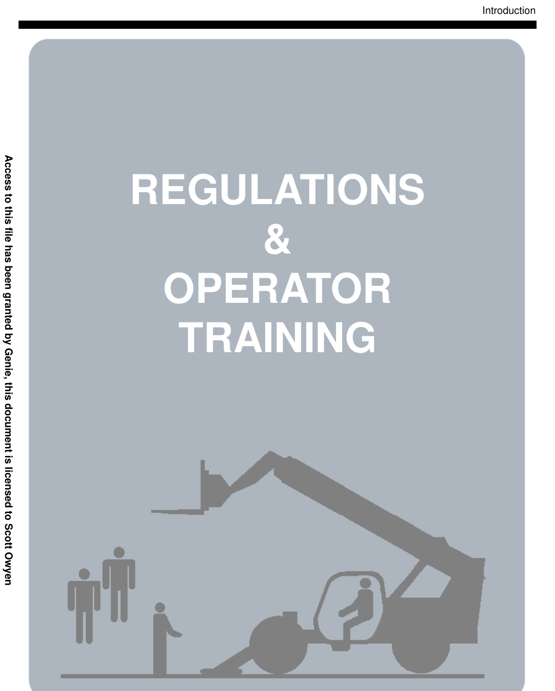
[F264]regulations and Operator Training [F265]
Class 1–5 Forklifts: Forklift operator training requirements are addressed in OSHA 1910.178(l). For forklifts (Classes 1–5), the ANSI/ITSDF standard is typically B56.1.
Class 1–5 Forklifts: Evaluate each operator’s competence operating the forklift under actual workplace conditions on the specific truck type and tasks.
Class 1–5 Forklifts: Evaluate each operator’s competence operating the forklift under actual workplace conditions on the specific truck type and tasks.
Class 1–5 Forklifts: Forklift operator training requirements are addressed in OSHA 1910.178(l). For forklifts (Classes 1–5), the ANSI/ITSDF standard is typically B56.1.
In the USA, the American National Standards Institute and the Industrial Truck Standards Development Foundation have established the safety requirements relating to the elements of design, operation, and maintenance of powered industrial trucks. The recognized standard in the USA for telehandlers is ANSI/ITSDF B56.6 and is free to download and print from the ITSDF web site at www.itsdf.org. [F267]
OSHA [F268]
The clarification was issued to improve the training of operators with the goal of reducing the number of injuries and deaths that occur as a result of inadequate operator training. [F269]
2. The operator has been involved in an accident or near-miss incident; [F272]
4. The operator is assigned to drive a different type of truck; or [F273]
Much like ANSI/ITSDF in the USA, the Canadian Standards Association, or CSA, has published Canada’s governing standard, CSA B335, which also establishes the safety requirements relating to the elements of design, operation, and maintenance of telehandlers. [F275]
In Canada, CSA B335 standards for telehandlers are enforced by OHS, which is similar to OSHA in the USA, and other provincial authorities. Since each province has their own OHS, its important to be familiar with those rules and regulations that apply to the safe operation and maintenance of the telehandler. [F277]
regulations and Operator Training [F278]
Class 1–5 Forklifts: Forklift operator training requirements are addressed in OSHA 1910.178(l). For forklifts (Classes 1–5), the ANSI/ITSDF standard is typically B56.1.
Class 1–5 Forklifts: Include required pre-operation inspection steps and ensure operators can perform them consistently before operating.
The ANSI/ITSDF B56.6-2021 Safety Standards require that a written safe use program specific to RTFL trucks shall be developed by the user. [F279]
The Safe Use Plan must include, but not be limited to the following: [F280]
b) verifying that the RTFL truck and attachment(s) being utilized are appropriate for the application; [F281]
d) verifying that the RTFL truck inspections, maintenance and repairs are performed per the provisions of this standard and as recommended by the manufacturer; [F282]
f) ensuring the familiarization of trained, authorized RTFL truck operator(s) with the specific RTFL truck to be used; [F283]
h) monitoring the work being performed to ensure compliance with provisions of this standard; [F284]
j) considering safety of persons in the vicinity of and not involved in the operation of the RTFL truck. [F285]
[F286]
Class 1–5 Forklifts: Evaluate each operator’s competence operating the forklift under actual workplace conditions on the specific truck type and tasks.
Class 1–5 Forklifts: Evaluate each operator’s competence operating the forklift under actual workplace conditions on the specific truck type and tasks.
Class 1–5 Forklifts: Emphasize data plate/capacity, load center effects, and any attachment limitations for the specific truck used.
Trainees may operate a powered industrial truck only: [F292]
regulations and Operator Training [F294]
All operator training and evaluation shall be conducted by persons who have the knowledge, training, and experience to train powered industrial truck operators and evaluate their competence. [F295]
Engine or motor operation; [F301]
Steering and maneuvering; [F302]
Visibility (including restrictions due to loading); [F303]
Fork and attachment adaptation, operation, and use limitations; [F304]
Vehicle capacity; [F305]
regulations and Operator Training [F306]
Class 1–5 Forklifts: Include required pre-operation inspection steps and ensure operators can perform them consistently before operating.
Class 1–5 Forklifts: If training on electric trucks (Class I–III), include battery charging procedures and required PPE per employer program.
Class 1–5 Forklifts: Reinforce pedestrian/traffic control rules (horn use, intersections, spotters when needed, and maintaining clear travel paths).
Class 1–5 Forklifts: Build the driving route/evaluation to include applicable site conditions (ramps/grades, dock plates, trailers, narrow aisles) consistent with the operator’s job tasks.
Class 1–5 Forklifts: If training on IC trucks (Class IV–V), include safe fueling/propane cylinder handling procedures per employer program.
Class 1–5 Forklifts: Evaluate each operator’s competence operating the forklift under actual workplace conditions on the specific truck type and tasks.
Class 1–5 Forklifts: Evaluate each operator’s competence operating the forklift under actual workplace conditions on the specific truck type and tasks.
Class 1–5 Forklifts: Evaluate each operator’s competence operating the forklift under actual workplace conditions on the specific truck type and tasks.
The operator is assigned to drive a different type of truck; or [F331]
A condition in the workplace changes in a manner that could affect safe operation of the truck. [F332]
An evaluation of each powered industrial truck operator’s performance shall be conducted at least once every three years. [F333]
The employer shall certify that each operator has been trained and evaluated as required by this paragraph (l). The certification shall include the name of the operator, the date of the training, the date of the evaluation, and the identity of the person(s) performing the training or evaluation. [F336]
regulations and Operator Training [F337]
If the employee was hired: [F339]
By December 1,1999 [F340]
After December 1, 1999 [F341]
Before the operator is assigned to operate a powered industrial truck. [F342]
Appendix A to this section provides non- mandatory guidance to assist employers in implementing this paragraph (l). This appendix does not add to, alter, or reduce the requirements of this section. [F343]
regulations and Operator Training [F344]
Appendix A — stability of Powered Industrial Trucks (Non-mandatory Appendix to Paragraph (l) of This Section) [F345]
The following definitions help to explain the principle of stability: [F346]
Counterweight is the weight that is built into the truck’s basic structure and is used to offset the load’s weight and to maximize the vehicle’s resistance to tipping over. [F347]
Grade is the slope of a surface, which is usually measured as the number of feet of rise or fall over a hundred foot horizontal distance (the slope is expressed as a percent). [F348]
Line of action is an imaginary vertical line through an object’s center of gravity. [F349]
Longitudinal stability is the truck’s resistance to overturning forward or rearward. [F350]
Track is the distance between the wheels on the same axle of the truck. [F351]
Wheelbase is the distance between the centerline of the vehicle’s front and rear wheels. [F352]
A-2.1. Determining the stability of a powered industrial truck is simple once a few basic principles are understood. There are many factors that contribute to a vehicle’s stability: the vehicle’s wheelbase, track, and height; the load’s weight distribution; and the vehicle’s counterweight location (if the vehicle is so equipped). [F353]
Class 1–5 Forklifts: Build the driving route/evaluation to include applicable site conditions (ramps/grades, dock plates, trailers, narrow aisles) consistent with the operator’s job tasks.
Class 1–5 Forklifts: Emphasize data plate/capacity, load center effects, and any attachment limitations for the specific truck used.
A-3.2. The longitudinal stability of a counterbalanced powered industrial truck depends on the vehicle’s moment and the load’s moment. In other words, if the mathematic product of the load moment (the distance from the front wheels, the approximate point at which the vehicle would tip forward) to the load’s center of gravity times the load’s weight is less than the vehicle’s moment, the system is balanced and will not tip forward. However, if the load’s moment is greater than the vehicle’s moment, the greater load-moment will force the truck to tip forward. [F355]
Class 1–5 Forklifts: Emphasize data plate/capacity, load center effects, and any attachment limitations for the specific truck used.
Class 1–5 Forklifts: Emphasize data plate/capacity, load center effects, and any attachment limitations for the specific truck used.
A-4.1. Almost all counterbalanced powered industrial trucks have a three-point suspension system, that is, the vehicle is supported at three points. This is true even if the vehicle has four wheels. The truck’s steer axle is attached to the truck by a pivot pin in the axle’s center. When the points are connected with imaginary lines, this three- point support forms a triangle called the stability triangle. [F357]
regulations and Operator Training [F359]
A-5.3. Although the true load-moment distance is measured from the front wheels, this distance is greater than the distance from the front face of the forks. Calculating the maximum allowable load-moment using the load-center distance always provides a lower load- moment than the truck was designed to handle. When handling unusual loads, such as those that are larger than 48 inches long (the center of gravity is greater than 24 inches) or that have an offset center of gravity, etc., a maximum allowable load-moment should be calculated and used to determine whether a load can be safely handled. For example, if an operator is operating a 3000 pound capacity truck (with a 24- inch load center), the maximum allowable load-moment is 72,000 inch-pounds (3,000 times 24). If a load is 60 inches long (30-inch load center), then the maximum that this load can weigh is 2,400 pounds (72,000 divided by 30). [F360]
regulations and Operator Training [F361]
A-6.2. Factors that affect the vehicle’s lateral stability include the load’s placement on the truck, the height of the load above the surface on which the vehicle is operating, and the vehicle’s degree of lean. [F363]
A-7.1. Up to this point, the stability of a powered industrial truck has been discussed without considering the dynamic forces that result when the vehicle and load are put into motion. The weight’s transfer and the resultant shift in the center of gravity due to the dynamic forces created when the machine is moving, braking, cornering, lifting, tilting, and lowering loads, etc., are important stability considerations. [F364]
Class 1–5 Forklifts: Evaluate each operator’s competence operating the forklift under actual workplace conditions on the specific truck type and tasks.
Class 1–5 Forklifts: Emphasize data plate/capacity, load center effects, and any attachment limitations for the specific truck used.
Class 1–5 Forklifts: Include required pre-operation inspection steps and ensure operators can perform them consistently before operating.
Class 1–5 Forklifts: Build the driving route/evaluation to include applicable site conditions (ramps/grades, dock plates, trailers, narrow aisles) consistent with the operator’s job tasks.
Class 1–5 Forklifts: If training on electric trucks (Class I–III), include battery charging procedures and required PPE per employer program.
There are a number of sub-sections within Part 6 of the CSA B335 standard. We’ll only be covering a few regarding training requirements. As always its important to be familiar with all of the requirements as it relates to the safe operation and maintenance of the telehandler. [F367]
The trainee shall be instructed on the safe operational procedures of a lift truck in accordance with the manufacturer’s operator manual, the user’s operating guidelines, and government regulations. Instruction shall be given on the following: [F369]
(b) company policies and procedures; [F370]
(d) lift truck features and safety equipment; [F371]
(f) capacity plate and location; [F372]
(h) start-up; [F373]
(j) pedestrians; [F374]
regulations and Operator Training [F375]
(m) personnel lifting, lowering, and supporting; [F376]
(o) workplace specific hazards; [F377]
(q) refueling/recharging. [F378]
regulations and Operator Training [F381]
Class 1–5 Forklifts: Build the driving route/evaluation to include applicable site conditions (ramps/grades, dock plates, trailers, narrow aisles) consistent with the operator’s job tasks.
Class 1–5 Forklifts: Evaluate each operator’s competence operating the forklift under actual workplace conditions on the specific truck type and tasks.
(a) equipment is introduced in the workplace that is unfamiliar to the operator; [F383]
(c) the operating conditions or the environment in which the operator works is changed (e.g., the operator works in a different area, moves different types of loads, etc.); [F384]
(e) skill or knowledge deficiencies have been identified. The upgrade training course shall include all relevant information, as applicable. The content, delivery method, and individual learning needs of the operator shall determine the course length. knowledge verification and practical evaluation shall be performed in accordance with Clause 6.20. [F385]
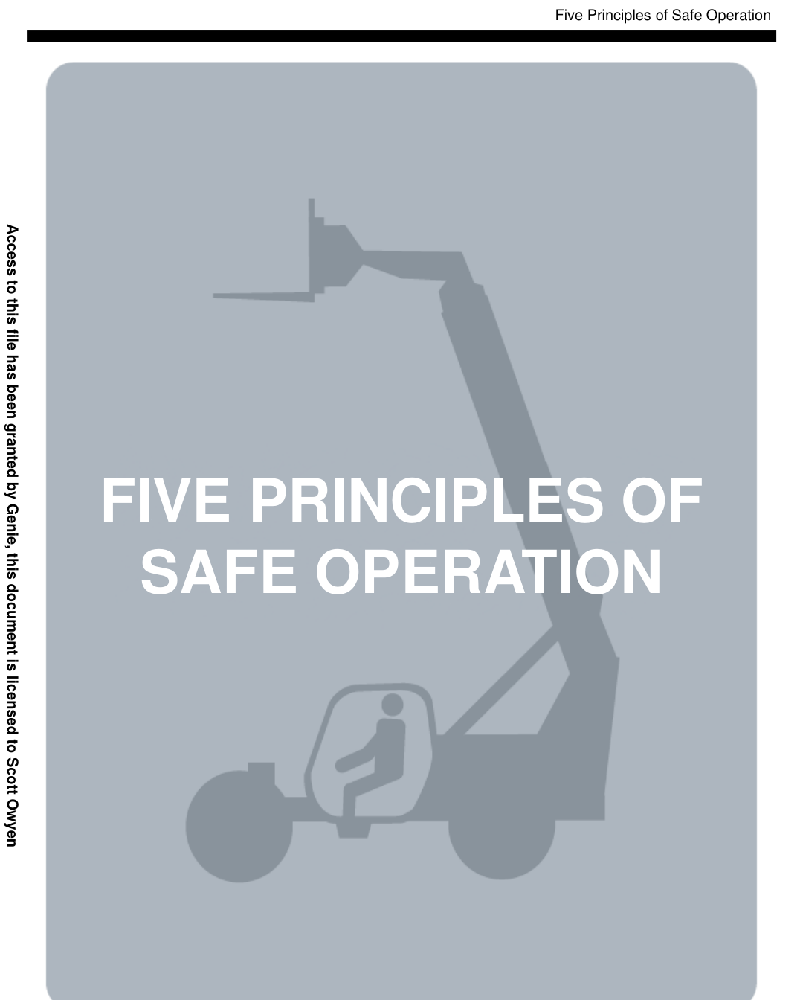
[F386]Class 1–5 Forklifts: Include required pre-operation inspection steps and ensure operators can perform them consistently before operating.
Class 1–5 Forklifts: Include required function test steps (e.g., test brakes, steering, horn, hydraulics, mast tilt, attachments) and ensure operators perform them safely before operating.
five principles of safe operation [F389]
It is the responsibility of the operator to learn and practice the principles of safe machine operation contained in this training manual and the machine's operator's manual. The five principles of safe operation are: [F390]
2. Always perform a pre-operation inspection [F391]
4. Inspect the workplace [F392]
Each principle of safe operation will be discussed in detail in the following sections. [F393]
five principles of safe operation [F394]
All safety signs are intended to convey important safety information to the personnel working on and around the machine. It is the operator's responsibility to read, understand and obey the information contained in these safety signs for their safety as well as those working in the area. [F396]
Safety alert symbol is used to alert you to potential personal injury hazards. Obey all safety messages that follow this symbol to avoid possible injury or death. [F398]
Red [F399]
Orange [F400]
Yellow [F401]
Blue [F402]
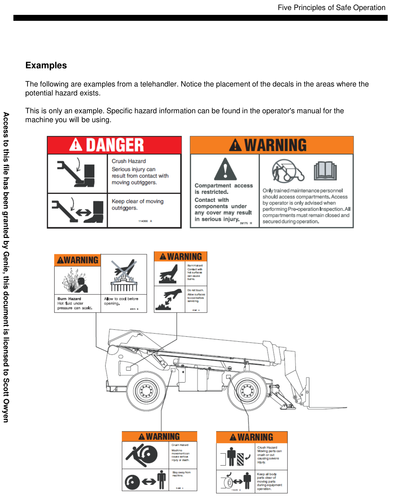
[F403]five principles of safe operation [F404]
telehandler operators should be familiar with the following operational considerations before operating the machine. [F405]
machine. [F407]
within the rated capacity of the machine. Do not exceed the rated load. [F408]
is missing. [F409]
it. [F410]
boom first. [F411]
front-end attachments if the capacity ratings or other critical decals or markings are missing. [F412]
support all forces imposed by the machine and the load. [F413]
level. The machine level indicator should be at zero degrees. [F414]
properly positioned or secured on the forks or approved attachment [F415]
gusty winds. Do not increase the surface area of the carriage or the load. Increasing the surface area exposed to the wind will decrease machine stability. [F416]
Class 1–5 Forklifts: Emphasize data plate/capacity, load center effects, and any attachment limitations for the specific truck used.
Class 1–5 Forklifts: Build the driving route/evaluation to include applicable site conditions (ramps/grades, dock plates, trailers, narrow aisles) consistent with the operator’s job tasks.
the parking brake is set or the service brake is applied. [F425]
backup alarm. [F427]
keep the load under control. Start and stop movements smoothly. [F428]
ramps or elevated platforms. [F429]
Class 1–5 Forklifts: If training on electric trucks (Class I–III), include battery charging procedures and required PPE per employer program.
machine. [F434]
than 12V to jump-start the engine. [F435]
welding. [F436]
stabilizers are fully retracted. [F437]
that in any way affect safety or stability. [F438]
towing or pushing. [F439]
five principles of safe operation [F440]
five principles of safe operation [F448]
liquid petroleum gas (LPG), gasoline, diesel fuel or other explosive substances. [F454]
running. Keep all open flames and sparks away. [F455]
only in an open, well-ventilated area away from sparks, flames and lighted tobacco. [F456]
locations or locations where potentially flammable or explosive gases or particles may be present. [F457]
with glow plugs or air intake grid heaters. [F458]
Class 1–5 Forklifts: If training on IC trucks (Class IV–V), include safe fueling/propane cylinder handling procedures per employer program.
Class 1–5 Forklifts: If training on electric trucks (Class I–III), include battery charging procedures and required PPE per employer program.
Class 1–5 Forklifts: Include required pre-operation inspection steps and ensure operators can perform them consistently before operating.
servicing. [F460]
any cover will cause serious injury. Only trained maintenance personnel should access compartments. Access by the operator is only advised when performing a pre-operation inspection. All compartments must remain closed and secured during operation. [F461]
Operators must know, or find out, the voltage of all power sources in their work area and maintain the required clearance in accordance with the information in the operator's manual and on decals attached to the telehandler. [F467]
NOTE : Refer to the Manufacturers Operators Manual for more information on potential hazards and operational considerations. [F469]
five principles of safe operation [F470]
stability with items of different weight or specification. [F473]
tires of different specification or ply rating. [F474]
machine. [F475]
as specified in the appropriate manufacturer’s service manual. [F476]
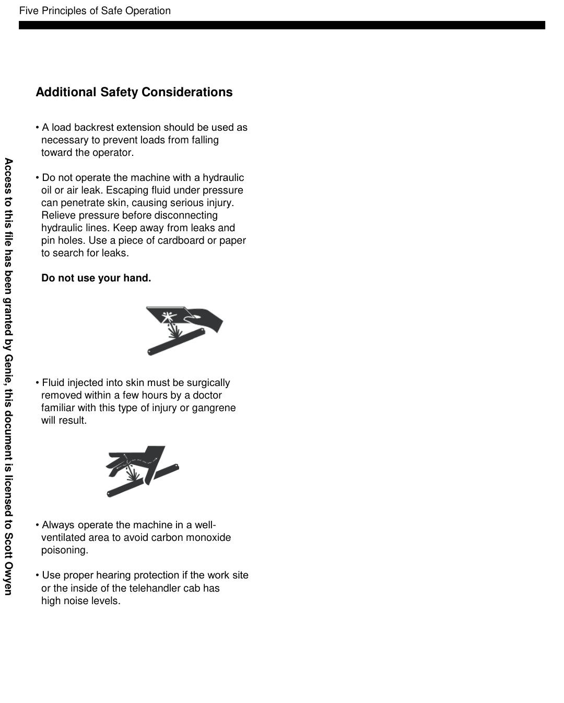
[F479]Class 1–5 Forklifts: Include required pre-operation inspection steps and ensure operators can perform them consistently before operating.
Class 1–5 Forklifts: Include required pre-operation inspection steps and ensure operators can perform them consistently before operating.
Class 1–5 Forklifts: If training on electric trucks (Class I–III), include battery charging procedures and required PPE per employer program.
The pre-operation inspection is a visual inspection performed by the operator prior to each work shift. The inspection is designed to discover if anything is apparently wrong with a machine before the operator performs the function tests. [F481]
If damage or any unauthorized variation from factory delivered condition is discovered, the machine must be tagged and removed from service. [F482]
Scheduled maintenance inspections must be performed by qualified service technicians, according to the manufacturer’s specifications. [F483]
five principles of safe operation [F484]
Some examples of items you need to inspect as part of the pre-operation inspection are: [F485]
the storage compartment inside the cab [F486]
for oil, hydraulic or coolant leaks [F487]
trained and authorized, battery level. Always wear the proper personal protective equipment when checking batteries. [F488]
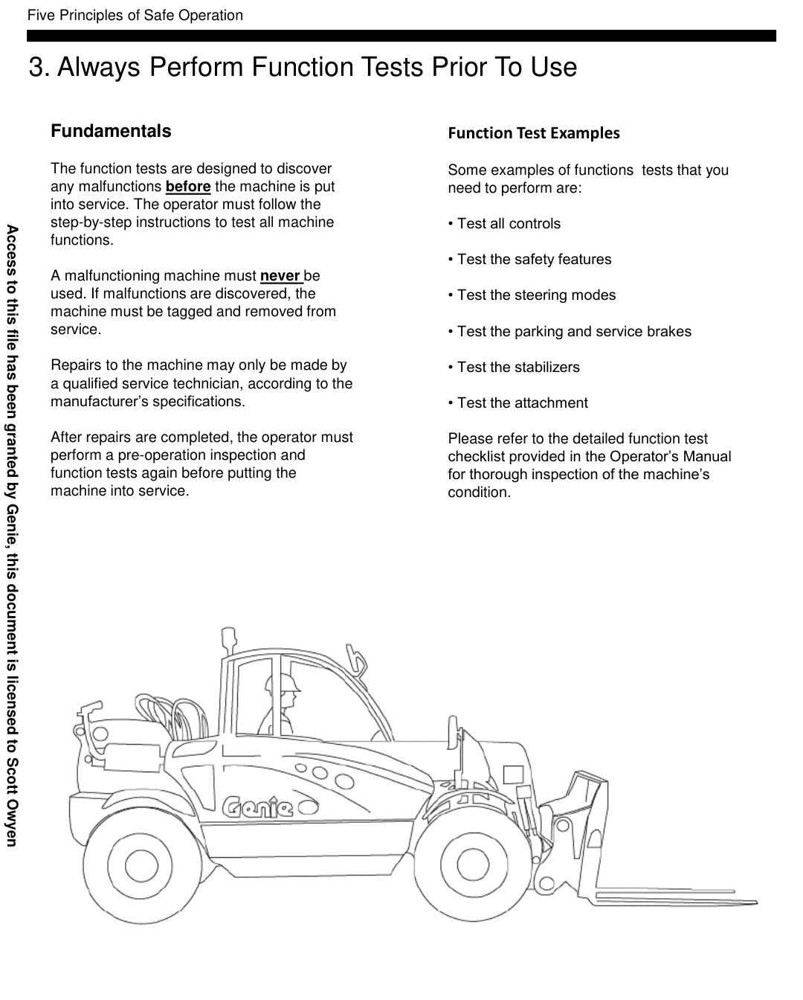
[F492]Class 1–5 Forklifts: Include required pre-operation inspection steps and ensure operators can perform them consistently before operating.
The workplace inspection helps the operator determine if the workplace is suitable for safe machine operation. It should be performed by the operator prior to moving the machine to the workplace. [F494]
It is the operator’s responsibility to read and remember workplace hazards, then watch for and avoid them while moving, setting up and operating the machine. [F495]
five principles of safe operation [F496]
Be aware of and avoid the following hazardous situations: [F497]
combustible dusts and explosive atmospheres [F501]
forces imposed by the machine and the load [F502]
workplace, operator’s cab or other restricted spaces [F504]
five principles of safe operation [F506]
Class 1–5 Forklifts: Include required pre-operation inspection steps and ensure operators can perform them consistently before operating.
The Operating Instructions section provides instructions for each aspect of telehandler operation. [F508]
It is the operator’s responsibility to follow all the safety rules and instructions in the Operator’s and Safety manuals. [F509]
Only trained and authorized personnel should be permitted to operate a telehandler. [F510]
If more than one operator is expected to use a telehandler at different times in the same work shift, they must all be qualified operators and are expected to follow all safety rules and instructions in the Operator’s and Safety manuals. [F511]
That means every new operator should perform a pre-operation inspection, function tests, and a workplace inspection before using the machine. [F512]
 [F515]
[F515]
operation [F516]
and return to the Participant’s Manual [F518]
Operators must keep in mind the similarities and, more importantly, the differences between automobiles and telehandlers. [F519]
Both, automobiles and telehandlers: [F520]
seat belts [F523]
Class 1–5 Forklifts: Reinforce pedestrian/traffic control rules (horn use, intersections, spotters when needed, and maintaining clear travel paths).
Center of gravity: The center of gravity for telehandlers may change during operation, depending on the position of the machine, boom and the load. This can significantly affect the stability of the telehandler during operation. For automobiles, center of gravity is almost always constant. [F526]
Weight: Since telehandlers use large steel components as counterbalance, the weight of the telehandler is significantly greater than that of an average automobile. [F527]
stability: Telehandlers are unstable if the combined center of gravity falls outside the stability triangle. Automobiles have four points of stability, with all four wheels in contact with the ground. [F528]
Class 1–5 Forklifts: Reinforce pedestrian/traffic control rules (horn use, intersections, spotters when needed, and maintaining clear travel paths).
Layout of controls: telehandler machine controls are typically hydraulically piloted proportional controls. There may also be a number of different switches used to control functions such as chassis sway, work lights, auxiliary controls. [F529]
Visibility: Telehandlers may have structures around the machine which could result in obstructions to visibility. [F530]
Stopping distance: A telehandler is typically much heavier than an automobile and therefore the stopping distance may be different at the same speed. [F531]
Parking brake: Telehandlers will typically utilize a spring-applied, hydraulically-released parking brake system. [F532]
operation [F533]
Some conditions of reduced visibility when operating a telehandler are: [F534]
ways, storage rack aisles [F535]
Whenever visibility is obstructed, drive slowly and use your horn to warn others. [F536]
Operators must be aware of all visibility restrictions prior to and while operating the telehandler. [F537]
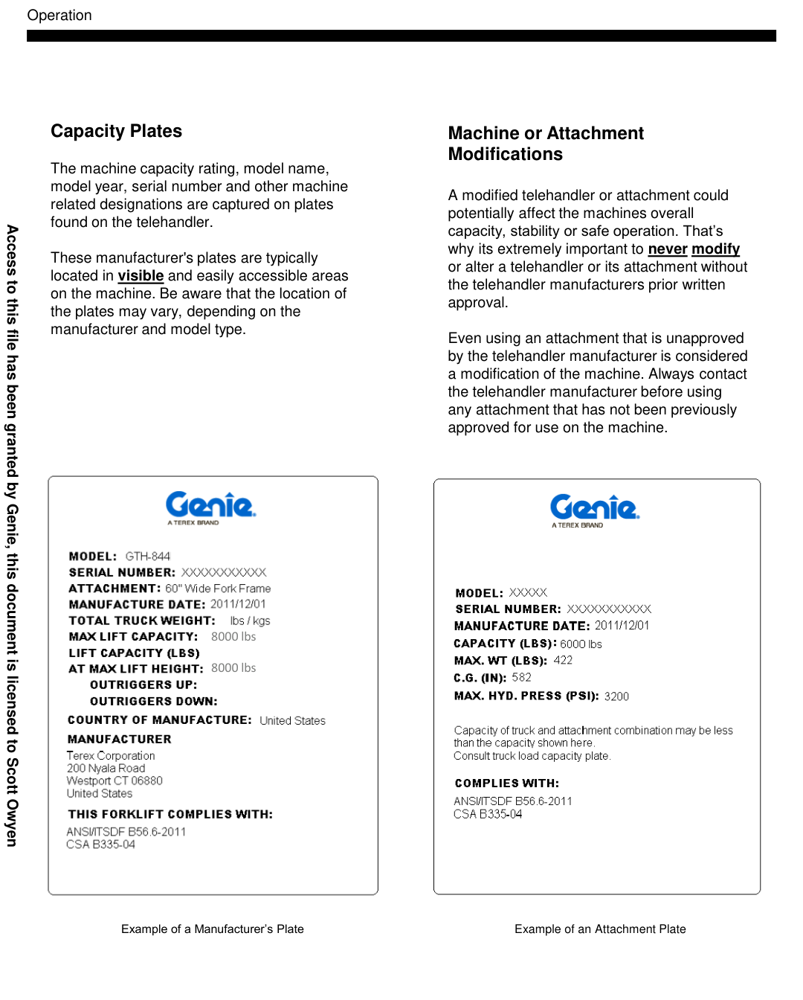
[F538]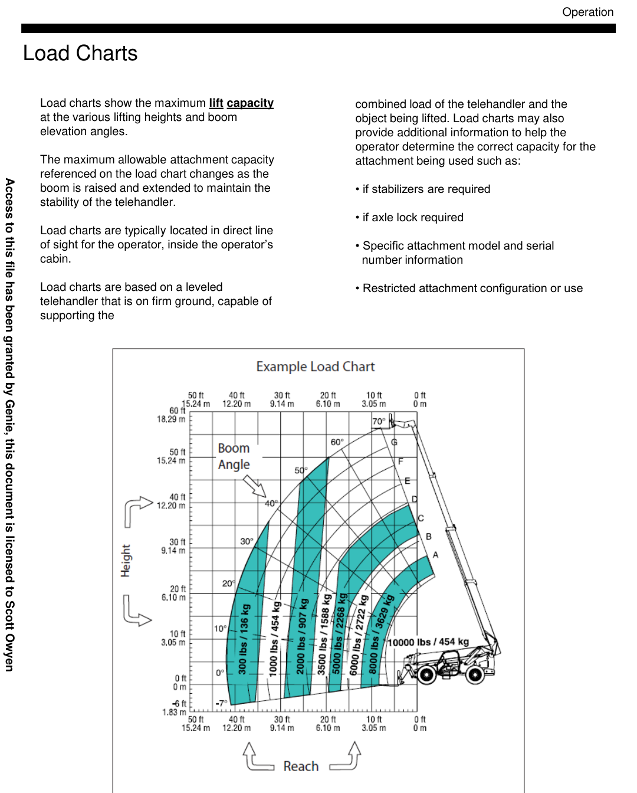
[F539] [F540]
[F540]
Class 1–5 Forklifts: Build the driving route/evaluation to include applicable site conditions (ramps/grades, dock plates, trailers, narrow aisles) consistent with the operator’s job tasks.
There are many conditions that may affect the stability of the machine during operation. Ground conditions or operating surface, surface grade, travel speed, wind conditions, weight or size of the load, tire air pressure, and operator judgment can all have an influence on stability, load handling and machine operation. [F542]
1. The telehandler has a center of gravity. [F545]
3. When a load is placed on the telehandler, [F546]
operation [F547]
It is important to understand the theory of center of gravity during machine operation in order to avoid conditions of instability. [F548]
NOTE: Unless specifically mentioned, it is assumed that the operating surface is always a firm and level ground. [F549]
C.G. of load [F550]
C.G. of load [F551]
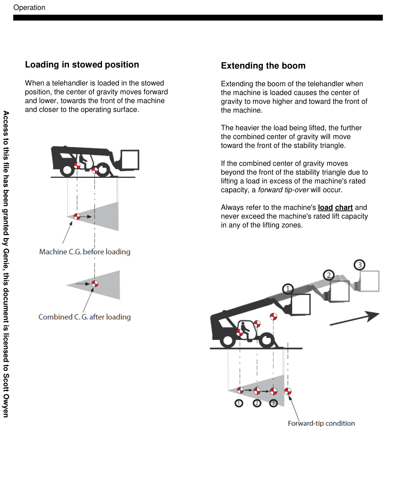
[F552] [F553]
[F553]
 [F554]
[F554]
Unloading the telehandler when the boom is raised moves the center of gravity lower and toward the rear of the machine. [F556]
operation [F557]
telehandler operation, such as machine motion or moving suspended loads, creates dynamic forces on the machine and the load. Dynamic forces can suddenly shift the location of the combined center of gravity to outside of the stability triangle and cause the machine to become unstable. [F558]
Heavy braking: When a telehandler is traveling forward with a load and heavy braking is applied, the change in dynamic forces results in a sudden forward shift in the load's center of gravity. If this happens, the load may fall from the telehandler. If the load is fixed, the combined center of gravity may move outside the stability triangle, which could cause a forward tip-over. [F559]
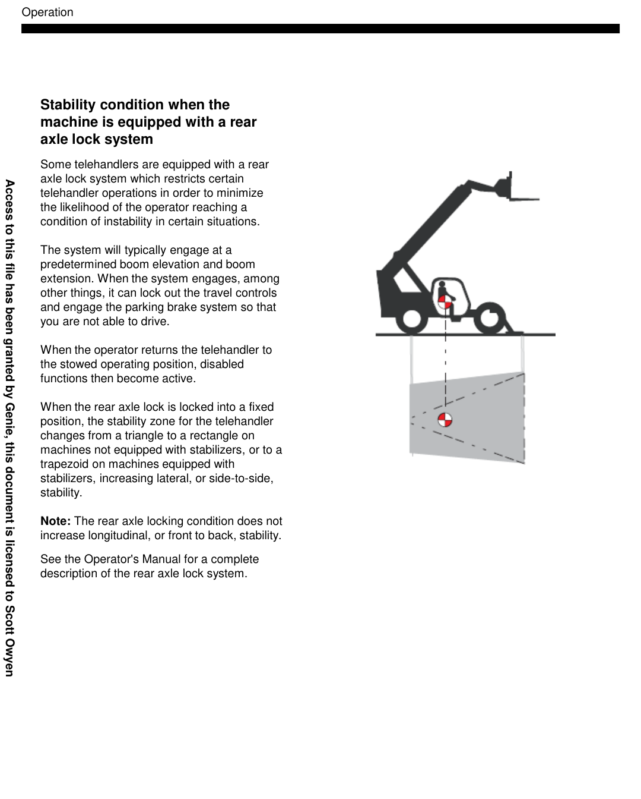
[F560]Class 1–5 Forklifts: If training on electric trucks (Class I–III), include battery charging procedures and required PPE per employer program.
In most telehandlers, operators can steer the machine using multiple steering modes such as two-wheel, four-wheel coordinated and four-wheel crab modes. Each mode provides specific maneuverability characteristics that are advantageous in certain conditions. [F562]
Two-wheeled steer is appropriate for over the road travel or when navigating a large jobsite. [F563]
Four-wheeled crab steer allows the operator to move the machine sideways for easier load pickup and placement or when navigating within a tight area. [F564]
operation [F565]
Note: Always realign the wheels before shifting to a different steering mode [F566]
The instrument panel allows the operator to constantly monitor specific machine conditions and performance. Machine operation parameters such as engine RPM, fuel level, water temperature, hour meter, and steering mode are typically displayed on the instrument panel located inside the operator’s cabin. Machine condition and warning lights for battery condition, low fuel level, and parking brake may also be included in the instrument panel. [F567]
operation [F569]
The telehandler is typically equipped with either a single or multiple control joysticks. [F570]
Auxiliary hydraulics controlling optional powered attachments may also be controlled through the joysticks. [F571]
Some telehandlers may be equipped with auxiliary hydraulics that allow the operator to connect and operate hydraulically-powered attachments that allow them to perform specific tasks at the work location. [F572]
Typically, a floor mounted, foot operated pushbutton switch or panel mounted switch is used for engaging the axle differential lock. [F574]
Typically, a panel mounted switch inside the operator’s cabin engages and disengages the parking brake. [F577]
A floor mounted service brake is used to control the machine speed and to stop the machine motion. [F578]
The accelerator pedal can also be used to increase the pump flow to the machine's hydraulic system. However, always engage the parking brake before doing this to prevent unintended machine movement. [F580]
Class 1–5 Forklifts: Emphasize data plate/capacity, load center effects, and any attachment limitations for the specific truck used.
This allows the operator to level the chassis of the telehandler to the right or left. The range varies, but typically this leveling capability can range between 8- and 12-degrees rotation. [F582]
Stabilizers may be permanently fixed to either the chassis frame or the front axle. [F584]
Frame mounted stabilizers may be affected by the use of the frame sway controls. Check with the telehandler manufacturer to determine if frame leveling should be done before deploying stabilizers. [F585]
operation [F586]
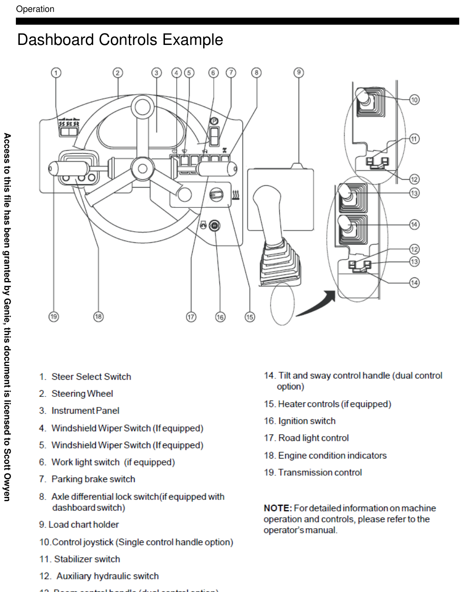
[F587]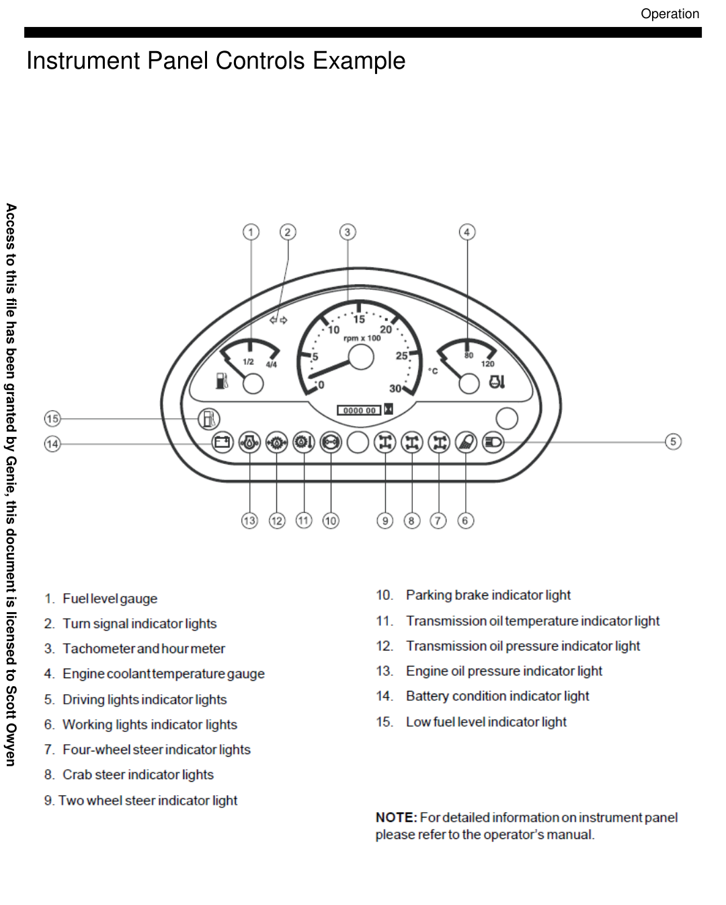
[F588]operation [F589]
2. Adjust the seat and steering wheel until you can easily reach all the machine controls. Do not operate the controls from any place other than the seated position. [F591]
4. Adjust side and cab mirrors. [F592]
6. If the parking brake is not already set, set the parking brake. [F593]
8. Monitor the gauges and the instrument panel to ensure that the telehandler is working properly. [F594]
Operators should be properly trained and use their best judgment and experience to constantly assess the jobsite conditions and avoid exceeding the machine’s, or the operator’s, capabilities for the terrain and conditions. [F596]
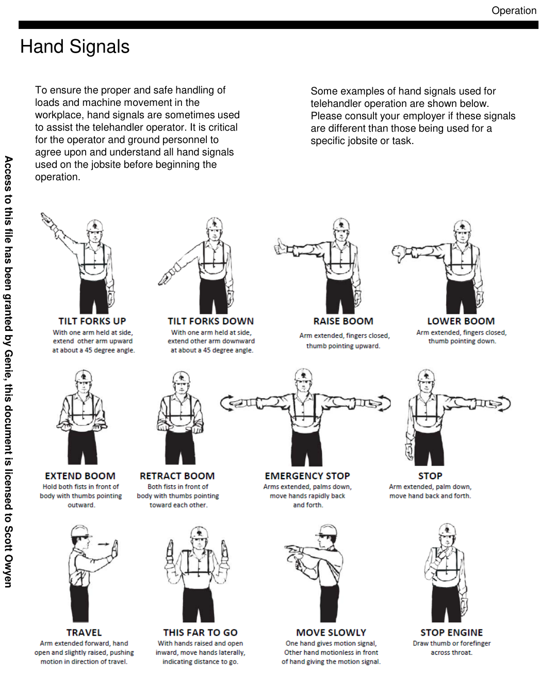
[F597]operation [F598]
All traffic regulations must be observed by the operator including but not limited to: [F599]
Class 1–5 Forklifts: Reinforce pedestrian/traffic control rules (horn use, intersections, spotters when needed, and maintaining clear travel paths).
Class 1–5 Forklifts: Reinforce pedestrian/traffic control rules (horn use, intersections, spotters when needed, and maintaining clear travel paths).
Class 1–5 Forklifts: Build the driving route/evaluation to include applicable site conditions (ramps/grades, dock plates, trailers, narrow aisles) consistent with the operator’s job tasks.
Class 1–5 Forklifts: Build the driving route/evaluation to include applicable site conditions (ramps/grades, dock plates, trailers, narrow aisles) consistent with the operator’s job tasks.
operation [F614]
Operators must use caution while driving on slopes. Grades should be ascended or descended slowly. [F615]
When the machine is unloaded, travel with the forks or attachment downhill. [F616]
operation [F617]
Always travel perpendicular, or straight on, to the slope and always keep the machine in gear. Do not turn across a slope. Limit travel path and speed according to the condition of the ground surface, traction, slope, location of personnel and any other factors which may create a hazard. [F618]
All body parts should remain inside the operator’s cabin at all times. [F620]
Always yield right-of-way to pedestrians. The telehandler operator must take care when working in areas with pedestrians or personnel, so as to not cause any bodily harm or injury. Use caution when approaching pedestrian areas. Before and during traveling, always look around for any pedestrians. [F622]
Class 1–5 Forklifts: Reinforce pedestrian/traffic control rules (horn use, intersections, spotters when needed, and maintaining clear travel paths).
Class 1–5 Forklifts: Build the driving route/evaluation to include applicable site conditions (ramps/grades, dock plates, trailers, narrow aisles) consistent with the operator’s job tasks.
Class 1–5 Forklifts: Emphasize data plate/capacity, load center effects, and any attachment limitations for the specific truck used.
There should be adequate clearance for the telehandler to enter or leave the elevator. [F625]
Dock boards: [F627]
Transporting on trailers: [F630]
Railcars: [F631]
Refer to the manufacturer’s specifications and Operator’s Manual on safe handling of suspended loads. [F633]
telehandler load charts are designed for loads where the load center is stationary. As a suspended load is moved, the load center can change. As a result, the standard load chart does not apply and extreme caution in transporting and lifting the load should be observed. [F634]
operation [F635]
Grades and sudden starts, stops, and turns can cause the load to swing and create a hazard if not externally stabilized. [F636]
Class 1–5 Forklifts: Build the driving route/evaluation to include applicable site conditions (ramps/grades, dock plates, trailers, narrow aisles) consistent with the operator’s job tasks.
Class 1–5 Forklifts: Emphasize data plate/capacity, load center effects, and any attachment limitations for the specific truck used.
Class 1–5 Forklifts: Forklift operator training requirements are addressed in OSHA 1910.178(l). For forklifts (Classes 1–5), the ANSI/ITSDF standard is typically B56.1.
Class 1–5 Forklifts: Build the driving route/evaluation to include applicable site conditions (ramps/grades, dock plates, trailers, narrow aisles) consistent with the operator’s job tasks.
Class 1–5 Forklifts: Reinforce pedestrian/traffic control rules (horn use, intersections, spotters when needed, and maintaining clear travel paths).
operation [F642]
The load chart in the cab shows the capacity limits of the telehandler. As mentioned previously, to use the load chart, the operator must know the weight of the load and how far out and up it is to be placed. [F643]
Class 1–5 Forklifts: Emphasize data plate/capacity, load center effects, and any attachment limitations for the specific truck used.
2. Place the transmission in neutral. [F645]
4. Lower the stabilizers, if equipped and if they are required for additional capacity. [F646]
6. Gradually move the controller to raise the boom to the required height. [F647]
7. Gradually move the controller to land the load at the final position. Lower the load until the weight s completely off the forks. Do not apply a downward force with the forks. [F648]
9. When the forks are clear of the load and the structure, the boom can be retracted, then lowered. [F649]
2. Spread the forks as wide as possible while still being able to pick up the load. [F651]
4. Raise the forks to the proper load entry height. [F652]
6. Slightly raise the load so it is completely lifted free from its resting point. [F653]
8. If picking from a ground position, carefully pick up the load, raise it to travel position and keep the forks tilted back slightly to cradle the load. [F654]
Beware of stack height limitations. Avoid over- stacking, as it may crush lower levels of loads or could cause the stack to become unstable. [F656]
operation [F657]
operation [F658]
After refueling, tighten the fuel tank cap before starting the engine. [F660]
Open flames and smoking are not permitted in proximity of recharging areas. [F662]
Ensure there is adequate ventilation for the dispersal of fumes from gassing batteries. [F663]
Class 1–5 Forklifts: If training on IC trucks (Class IV–V), include safe fueling/propane cylinder handling procedures per employer program.
Class 1–5 Forklifts: If training on electric trucks (Class I–III), include battery charging procedures and required PPE per employer program.
Class 1–5 Forklifts: Reinforce pedestrian/traffic control rules (horn use, intersections, spotters when needed, and maintaining clear travel paths).
Class 1–5 Forklifts: If training on IC trucks (Class IV–V), include safe fueling/propane cylinder handling procedures per employer program.
Follow shutdown procedures when the machine is left in an unattended state. [F665]
Procedure for parking the unit and shutting the machine down: [F667]
2. Bring the telehandler to a complete stop. [F668]
4. Fully retract the boom and lower the attachment. If equipped with forks, lower the forks flat on the ground to avoid a trip hazard. [F669]
6. Turn off the telehandler. [F670]
8. Remove the key. [F671]
10. Dismount facing the telehandler using the [F672]
11. If the telehandler must be left on an [F673]
[F674]
attachments [F675]
There are a wide variety of attachments available for telehandlers. As mentioned previously, only use attachments that have been approved by the telehandler manufacturer. This will help ensure that the proper load charts, and any conditional requirements, are provided to the operator. [F676]
attachments may be permanently fixed to the telehandler or utilize what is often called a “quick- attach” system that allows the telehandler to quickly change different attachments. [F677]
Please note that telehandler attachments may: [F678]
2. Create a “Partially Loaded Condition” [F679]
Please refer to the Operator’s Manual for more information on using attachments or contact the telehandler manufacturer. [F680]
Class 1–5 Forklifts: Emphasize data plate/capacity, load center effects, and any attachment limitations for the specific truck used.
A rotating carriage allows the operator to rotate the entire carriage, in many cases up to 10 degrees, clockwise or counterclockwise. The purpose of this attachment is to allow the operator to compensate for uneven load surface or uneven terrain when it affects an area that a load needs to be picked or placed. [F682]
Swing carriages are typically used for helping land a load in tight areas, or maneuvering loads during travel around tight corners. Swing carriages allow the operator to move the carriage clockwise or counterclockwise along the horizontal axis. [F684]
Class 1–5 Forklifts: Emphasize data plate/capacity, load center effects, and any attachment limitations for the specific truck used.
attachments [F687]
Multi-purpose buckets are only approved for certain telehandlers. Since they subject the telehandlers boom to more torsional stress and impact loading, not all telehandlers are suited for this type of attachment. If unclear whether this attachment is approved for a specific telehandler, contact the telehandler manufacturer. [F688]
Truss booms are often used for transporting large or hard to handle loads, such as large wooden trusses. Truss booms are almost always rated for less than the overall capacity of the telehandler. Always use the appropriate load chart for a truss boom to avoid overloading. [F689]
Note: Refer to the operator's manual for information on handling suspended loads. [F690]
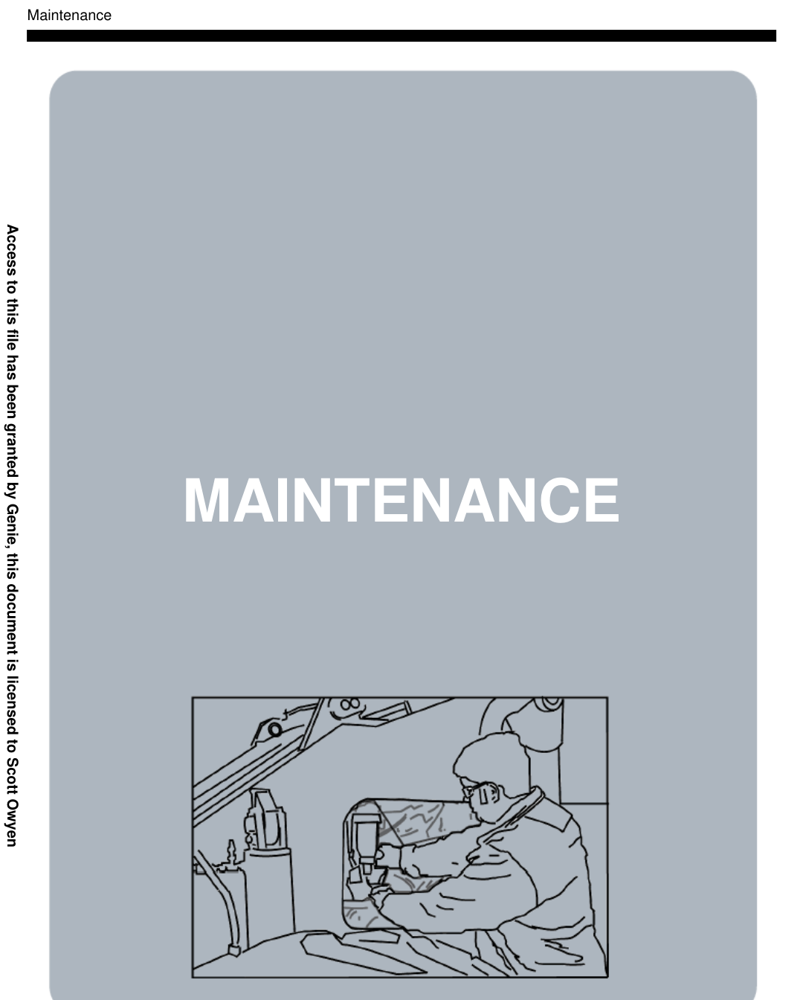
[F691] [F692]
[F692]
[F693]
Class 1–5 Forklifts: Forklift operator training requirements are addressed in OSHA 1910.178(l). For forklifts (Classes 1–5), the ANSI/ITSDF standard is typically B56.1.
Many aspects of telehandler operation and testing are discussed in standards and regulations published by the regulatory and standards institutions. [F695]
U.S.A. - The American National Standards Institute (ANSI), the Industrial Truck Standards Development Foundation (ITSDF) and the Occupational Safety & Health Administration (OSHA). For Class 7 variable reach trucks (telehandlers), standards pertaining to operator training are also found in ANSI/ITSDF B56.6 and OSHA 1910.178(l). [F696]
Details on above mentioned standards can be found at the links provided below. [F697]
CSA - www.CSA.org [F698]
OHS - www.ccohs.ca [F699]
maintenance [F700]
In addition to this training manual, you have additional access to product information resources for acquiring information related to the design and proper use of the equipment. [F701]
In addition to the previously mentioned standards and regulatory websites, you might also consider visiting the equipment manufacturer’s website for more information. In many cases, as is the case with Genie’s website, you can find the necessary Operators Manual for the equipment. If you are unable to find the applicable manual, you can also contact the manufacturer directly. [F702]
To order replacement training materials for this program please contact your local Genie dealer. To assist you in finding a local Genie dealer in your area please visit us at www.genielift.com. [F703]
[F706]
 [F707]
[F707]
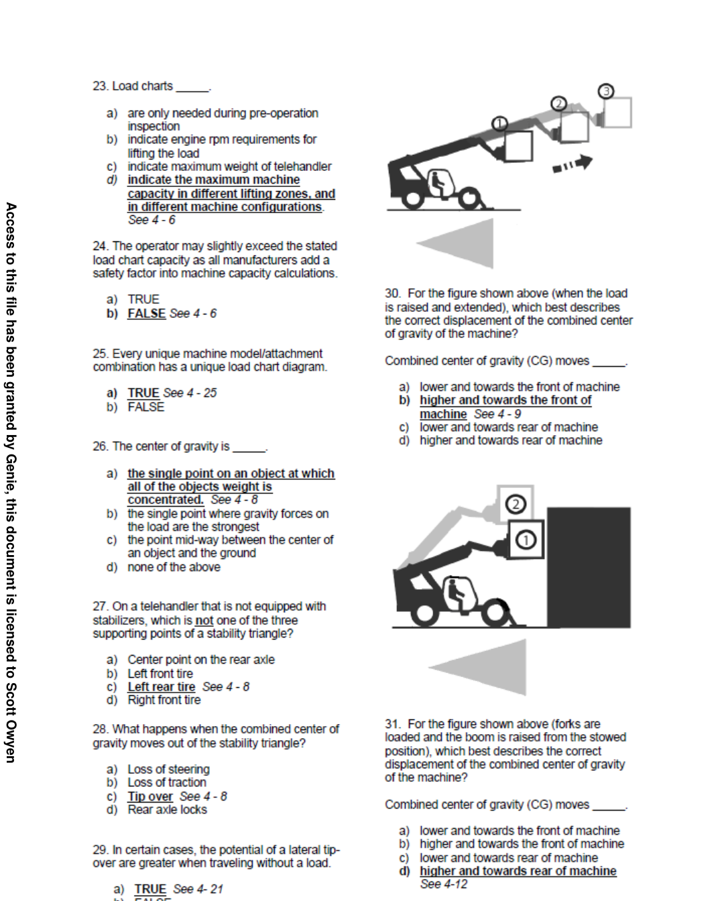
[F708] [F709]
[F709]
Class 1–5 Forklifts: Use parallel written exam questions for Class I–V forklifts on stability (stability triangle), travel with a load on grades, tip-over response, safe passing/traffic rules, elevator entry, and dock board safety. Align answers to the forklift operator’s manual and the employer’s site rules. [F710]
[F711]
Class 1–5 Forklifts: Include forklift-specific knowledge checks tied to OSHA 1910.178(l): refresher triggers and evaluation frequency, attachment impacts on capacity, required pre-operation inspections and function tests, fork positioning/load engagement, and basic maintenance limits (tag-out/remove from service when unsafe). [F712]
 [F713]
[F713]
Class 1–5 Forklifts: Add a forklift component legend for Classes I–V (examples: mast, carriage, forks, load backrest, lift/tilt cylinders, overhead guard, counterweight, steer axle, drive axle, controls). Note that Class II/III equipment may use different terms/components (reach mechanisms, walkie controls). [F714]
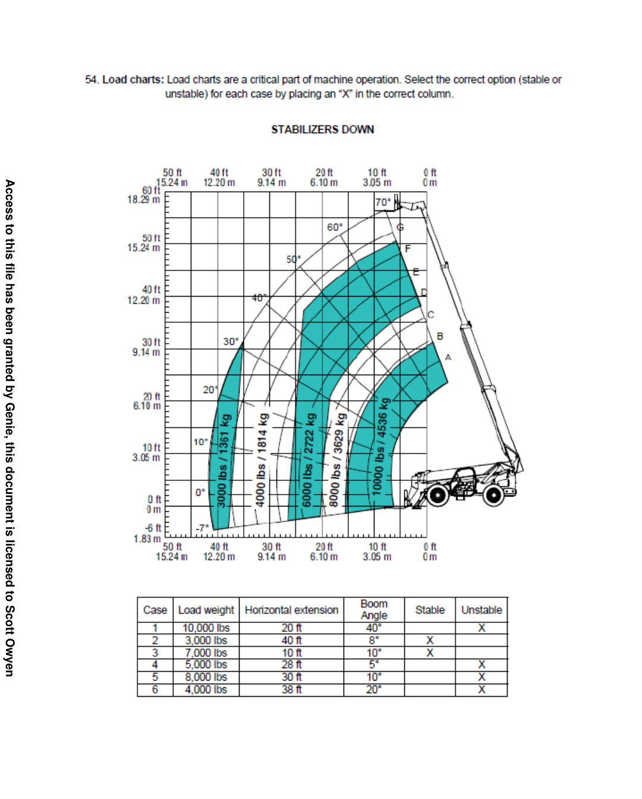
[F715]Ref: F06 [F716]
Class 1–5 Forklifts: For forklifts, replace telehandler load charts with the forklift’s data plate/capacity rating, load center, and any derating for attachments, mast height, and configuration. Operators must verify capacity before picking, lifting, or traveling with a load. [F717]
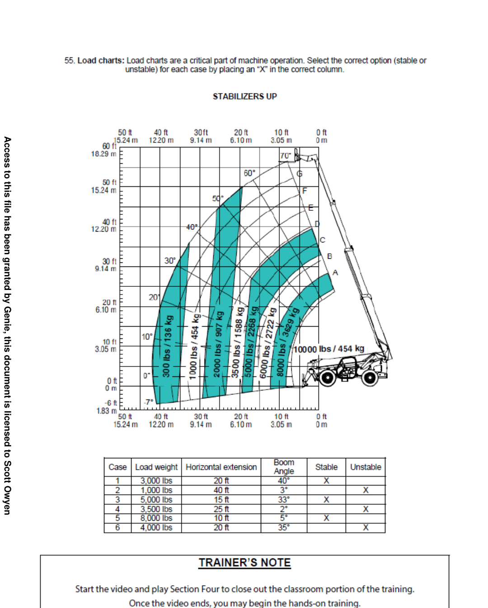
[F718]Class 1–5 Forklifts: Reinforce that forklift capacity changes with configuration (mast height, tilt, attachments, load center) and must match the data plate. After classroom instruction, move to hands-on practice and a documented performance evaluation on the actual truck type(s) used (Class I–V). [F719]
 [F720]
[F720]
Class 1–5 Forklifts: For forklift Classes I–V, use the same training record concept but record the forklift class/type trained, truck make/model, and any attachments used during evaluation. Keep trainer/evaluator identity and training/evaluation dates with the record. [F721]
 [F722]
[F722]
Class 1–5 Forklifts: If you use multiple forklift types or cohorts, use an additional copy of this training record to document each forklift class/type (I–V) the operator is trained/evaluated on, including model(s) and attachments used. [F723]
 [F724]
[F724]
Class 1–5 Forklifts: Create/attach a forklift hands-on evaluation checklist (Class I–V) aligned to the operator’s tasks: pre-op inspection, function checks, safe travel with forks low, controlled turns, horn/intersections, picking/placing/stacking, parking/shutdown, and any site-specific items (docks, trailers, ramps/grades, narrow aisles). [F725]
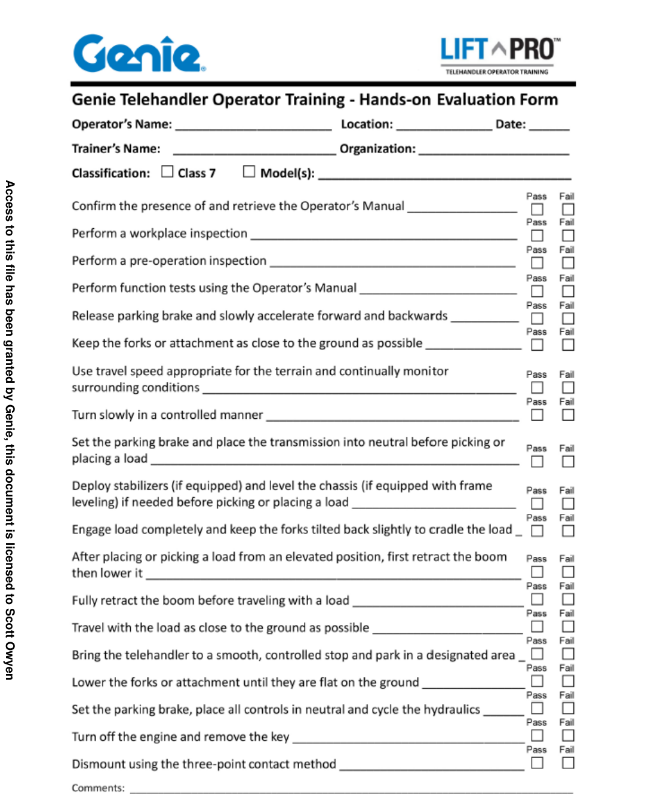
[F726]Class 1–5 Forklifts: If training more than one forklift class/type, use a separate hands-on evaluation form per truck type (Class I–V) so competence is documented on each equipment type the operator will operate. [F727]
[F728]
Class 1–5 Forklifts: Close-out: For forklift Classes I–V, ensure the final packet includes the operator’s training record + hands-on evaluation documentation + any written knowledge check required by the employer program, retained per your recordkeeping standard. [F729]